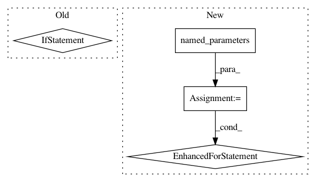

32579822389423c7f4120e222aa26652f8507735,onmt/utils/optimizers.py,Optimizer,set_parameters,#Optimizer#Any#,172
Before Change
self.params = []
self.sparse_params = []
for k, p in params:
if p.requires_grad:
if self.method != "sparseadam" or "embed" not in k:
self.params.append(p)
else:
self.sparse_params.append(p)
if self.method == "sgd":
self.optimizer = optim.SGD(self.params, lr=self.learning_rate)
elif self.method == "adagrad":
self.optimizer = optim.Adagrad(self.params, lr=self.learning_rate)
After Change
elif self.method == "sparseadam":
dense = []
sparse = []
for name, param in model.named_parameters():
if not param.requires_grad:
continue
// TODO: Find a better way to check for sparse gradients.
if "embed" in name:
sparse.append(param)
else:
dense.append(param)
self.optimizer = MultipleOptimizer(
[optim.Adam(dense, lr=self.learning_rate,
betas=self.betas, eps=1e-8),
optim.SparseAdam(sparse, lr=self.learning_rate,
In pattern: SUPERPATTERN
Frequency: 3
Non-data size: 4
Instances
Project Name: OpenNMT/OpenNMT-py
Commit Name: 32579822389423c7f4120e222aa26652f8507735
Time: 2018-12-18
Author: guillaumekln@users.noreply.github.com
File Name: onmt/utils/optimizers.py
Class Name: Optimizer
Method Name: set_parameters
Project Name: cornellius-gp/gpytorch
Commit Name: bbca270ad5dfb3440f0766db9dffd214f28e0566
Time: 2020-08-24
Author: gpleiss@gmail.com
File Name: gpytorch/module.py
Class Name: Module
Method Name: named_hyperparameters
Project Name: cornellius-gp/gpytorch
Commit Name: bbca270ad5dfb3440f0766db9dffd214f28e0566
Time: 2020-08-24
Author: gpleiss@gmail.com
File Name: gpytorch/module.py
Class Name: Module
Method Name: named_variational_parameters